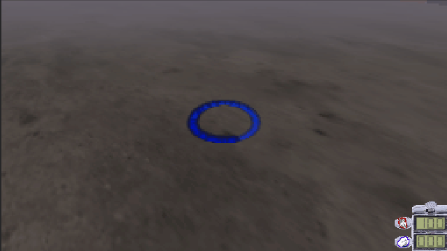
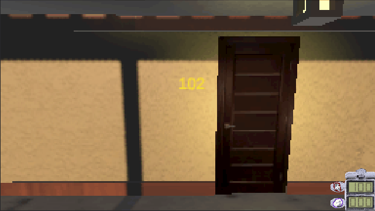
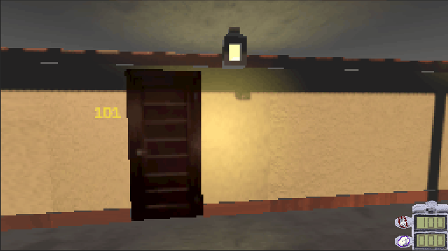
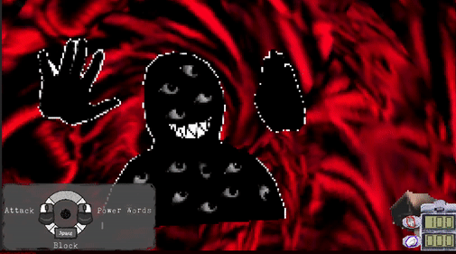
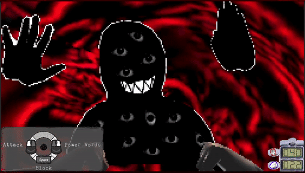

Overview:
Dreams of Disquiet is a game I made in cooperation with Steve Gutierrez in the Unity game engine. The
game was made over the course of 6 months (8/18/2021 – 4/25/2022). The Game can be found on itch.io
here.
Dreams of Disquiet as it stands now is a first person JRPG where the player explores a variety of weird,
strange, and disquieting realities. On their adventures, they will meet strange inhabitants and battle
terrifying monsters, as they begin to slowly unravel the mysteries behind the Agency holding them
hostage and discover the reasons they keep coming to these disquieting places.
If any of that sounds interesting, then I would highly suggest going and playing the game for yourself,
as the rest of this post is a highly in depth analysis/summary of the game’s systems and will contain
massive spoilers.
Dialogue

First Screen
Overview:
Dreams of Disquiet is built around three different gameplay loops: Dialogue, Exploration, Combat. We
will discuss all three of these loops, how they are implemented, and the design philosophies behind them
as we go.
When the player first enters the game they are immediately introduced to the first of the three primary
gameplay loops, Dialogue.
The Dialogue system is a dialogue tree. The player chooses a response, which takes them to the next
piece of dialogue, or exits them out of the tree. Depending on the situation, a response will yield
either cope or emotional debuff points. The functionality of which we will get into during the combat
section. We decided to open the game with dialogue as it provides an immediate hook into the game’s
story, the central motivator for the player. It also gets the player using the WASD keys — the first 4
(and most used) of 7 total keys the player will use through out the game.
Implementation:

Example Dialogue Sheet
Dialogue is written by the designer using Google Sheets. It is then downloaded as a .tsv (tab separated
variable) file, converted to a .txt file, and parsed into an array in Unity at runtime. Each row in the
Google sheet becomes one element of the dialogue array.
For each row of dialogue, there is a column for Content (what the other person is saying) and three
columns for each of 3 response options, which are:
- Response (what the player is saying),
- Cope Amount (an in-game resource given to the player for picking that response), and
- Function Calls (a string of characters used to call functions in the code)
- For example, the string “C,1*D,2,10” makes two function calls (which are delineated by the ‘*’ character).
- The first call “C,1” calls the continue function at index 1, which makes the dialogue continue at entry 1 in the array.
- The second call “D,2,10” calls the function to increase the emotional state debuff (an in-game combat status) at index 2 by 10 units. (emotional states will be further explained in the combat section under dialogue.)
However, the downside of this system is the huge bottleneck it adds to production. Using a spreadsheet layout makes it hard to tell what dialogues leads where. If there is a problem in the dialogue script, you have to re-export a whole new dialogue asset and place it in the engine. A more elegant way of handling dialogue (like Yarn Spinner, or a node based system) is the first thing on the implementation docket for when/if this project is pushed further.
Exploration
Camera Look:

Camera Look In Action
The Exploration loop of the game consists of four different aspects: Camera Look, Movement, Inspectable
Objects, and Interactable Objects. The first two are focused around how the player explores the world,
and the second two focus more on what the player explores.
Unlike most games the controls for Camera Look and Movement have been switched. Where the camera is
controlled by the WASD keys and the movement is controlled by the mouse. We picked these controls as the
inverse of the normal first person controls because we wanted the player to immediately feel slightly
uneasy. The standard convention has become second nature to most players, so by subverting those
expectations we force them out of their comfort zone, and make them hyper aware of their actions because
now they have to think about what they want to do instead of just doing it.
We introduce the player to the Camera Look separate from movement by starting them off in the Agency
Room. A very simplistic room that strips the player of their ability to walk, only letting them look
around and interact with a TV in the center of the room. We decided to introduce the different modes of
exploration to the player in stages in order to avoid overloading the player with new mechanics, and
limiting the possibility that the player forgets about key mechanics they will need in order to progress
through the game.
Movement:
Once the player interacts with the TV, they are taken into the level proper, and introduced to Movement
(the
second half of the Exploration loop).
The player moves by visually selecting a target and then walking to that marker. The farther they look
forward, farther away the target is placed. The visual path is an arc. We decided to go with an arc
because a standard raycast would have the player looking at the ground most of the time.
The implementation of the move arc is pretty simple. Basically, we generate a collection of points along
a parabola using the equation –ax2 + h where x is the time component, a is the width of the parabola,
and h is the height. Once those points are generated, we draw a raycast between each point until we hit
something.

In Game Movement

Arc Cast in Editor

Arc Cast in Code
This approach, while functional, lacks a certain readability by the designer, due to the abstract nature
of the equation. Basically, it is hard to anticipate how big the parabolic arc will be, or how far the
player will be able to travel. A better approach could be to generate a start, end, and mid point ahead
of time, and then generate a quadratic curve. A curve-based system would provide better control over the
player’s end location, and might be implemented in a future version.
Inspectable Objects:
Inspectable Objects are the primary way we built atmosphere into our game. We took inspiration from
other JRPG and older PS1 titles (specifically Resident Evil). Like those games, we use our lack of
graphical fidelity in conjunction with the Inspect system to strengthen the overall atmosphere by
forcing the player to fill in the gaps with their limited information.
The visual representation in front of the player is bland and uninteresting. We use the atmosphere as
the spice to define what kind of experience we want the player to have. An unexpected, yet ultimately
beneficial consequence of this approach, is that we can extend playtime by adding a handful of
Inspectable Objects to an otherwise plain box room. The downside of this approach is that we have to
make the Inspectable Objects contents interesting enough to be worth the player’s time.

In Game Inspect Inspect

Inspectable Object In Editor

Inspectable Pickup Object In Editor
The Inspect system is fairly simple. Basically, we shoot out a raycast looking for an object that has
the Inspectable component. If we hit one of these objects, we display an “Eye” icon on the screen,
showing the player the object is Inspectable. Once the player right clicks on the object, we print out a
string taken from the object’s script, character by character at a default rate of 1 character per 0.1
seconds.
The object’s script also contains two invisible utilities: a wait character and the ability to call
Unity events.
The wait character (designated as ` ) causes the script to pause 0.25 seconds before printing the next
character to the screen. This wait character adds a great deal of utility to the designer in terms of
trying to get across mood and tone of the dialogue. A better implementation of this pausing
functionality could be to wait a length
of time proportional to the printing time (instead of a fixed length of time).
The second hidden mechanic is the ability to call Unity events (which are public functions from
scripts). This allows us to basically trigger any kind of functionality we want. For example, we can use
Inspectable objects as pick ups, just by calling Level Manager Events (described further down this
page). There are two places for an Inspectable object to call events: On Inspect and After Inspect.
These are triggered once the player first interacts with an object and right after the player interacts
with an object, respectfully.
Interactable Objects:
Interactable Objects are a class of object , whose broad definition is “do something to the player when
the
player clicks on it”. Interactable Objects are a lot like Inspectable Objects. They use the same raycast
system,
but with a “Hand” icon, showing the player the object is Interactable.
There are three main classes derived from the interactable object class. The Transition Object, which
teleports
the player to a new spot and plays an animation. The Cutscene Object which directs the player to a
certain
spot
and then plays a cutscene. And, the Dialogue Object which causes the player to enter the dialogue
gameplay
loop
(described above).

In Game Cutscene Interact

Cutscene Interactable Object In Editor
Transition Interactable Object In Editor

Dialogue Interactable Object In Editor
All three of these Interactable Objects employ Unity Events to call functions. The specific function
called
is
determined in the instance of the object, not the class definition. This means Interactable Objects of
the
same
type can call vastly different functions.
The open-ended aspect of this system allows the designer to customize these functions as needed. Which,
in
turn,
varies the player’s experiences with these objects. Thus, a designer can build a wide variety of
interactions
with only a handful of functions.
However, the major problem with this system, is that it’s not appropriate for a large-scale project. The
system
works for our two-person team, because Steve and I both know how to code, and we are so deep in this
project
that we know it inside and out. If additional designers were brought into the team, then the ability to
make
arbitrary function quickly becomes dangerous. The designer has too much power to break things and would
be
terribly lost in the system.
To make the Interactable Object system more appropriate for a large-scale project, we would want to
abstract
it
out and make function calls safer.
Combat
Overview:
When Steve and I were first designing the systems for this game (especially the combat system), we were
greatly inspired by this video (credit: YOURLOCALBREADMAN). Just the sheer
weirdness of the concept alone was electrifying, and we wanted to build systems that invoked
similar feelings to those in the video.
However, we really didn’t want to make a menu-driven, turn-based combat system like every other JRPG.
Partly because it has been done before, but mainly because it is just so boring and passive. So, we
built a pseudo-real-time system inspired by the old school JRPG systems, along with a large helping of
Punchout.
Combat can be broken down into two different phases. The first phase is the Dialogue, where the player
gains Cope while talking to the enemy (to put them in a certain emotional state). And the second phase
of combat is the actual fighting, where you can punch, block, stun, as well as sling power words at your
opponent.
Combat:
Combat is a very simplistic affair. When the player throws a punch, they deal damage to the enemy. If
the enemy takes damage in a specific time window, they get stunned. If the player blocks, they take less
damage, and if they block just in time ,they take no damage.
There aren’t any interruptions or interactions from the world that have to be designed around. So when,
for example, the enemy throws a punch, we know for a fact the player will take some form of damage —
normal damage, reduced damage from blocking, or completely negated damage due to perfect blocking.
Because of this certainty, we can embed function calls into the animations that will either run
functions to set states in the player/enemy, or run functions to do checks against the
player’s/enemy’s
state.

Attack Animation

Attack Animation In Editor


{kind=link}
{kind=link}
{kind=link}
{kind=link}
{kind=link}
In turn, this simplistic design allows easier revision and experimentation. We can add or rework
features without taking a large amount of development time. For example, here is a list of
everything that was not in our first conceptions of combat:
- Stunning
- Attacking and Blocking with the left and right mouse buttons
- Left Shift to use Power Words
- Slowing down time when using Power Words
- Dialogue at the beginning of combat
- Emotional states
- Perfect Blocking
- Variable damage timer speeds
Dialogue:

Dialogue In Combat
The dialogue system inside the Combat gameplay loop engages the player (when they are evaluating a
dialogue choice) by forcing a prognostic response. The player has to ask themselves not “What would my
character do?”, but instead “How will this enemy respond?”
We designed the system this way to keep the player involved. The player will fight the same enemy with
the same dialogue multiple times over the course of the game. The player could get really bored (if they
decide to roleplay) as it necessitates their character giving the same response each time. To alleviate
that boredom, we want to encourage the player to try out different responses and be active in the
dialogue every time they fight repeat enemies.
As the player progresses through the Dialogue system, an invisible counter for one (of eight) emotional
states is incremented.
At the end of the dialogue, assuming the player has one or more emotional states above zero, they will
be prompted to choose an emotional state (a “Debuff”) to put the enemy in. There are 8 Debuffs, each
associated with one of the emotional states listed below. The associations are also listed in the table
on the right.
These Debuffs are designed to change the entire dynamic of combat. For example, The Moon causes the
enemy to hit harder but slower. The Hanged Man increases health equal to the damage dealt.
Emotional States:

Debuff List In Engine
- The Wheel – The Enemy does a series of attacks in quick succession.
- Judgement – Deal damage to the enemy equal to your amount of cope.
- The Hanged Man – Whenever someone deals damage they heal.
- Temperance – Forces the enemy into a specific attack pattern.
- The Fool – Everyone heals.
- The Moon – Your opponent is stronger but hits slower.
- The Magician – Your power words last longer.
- The Star – Longer stun windows, shorter stun durations, and every time you stun the enemy you gain cope.
These states will almost always make things easier on the player in one way or another. Not good at blocking? Use The Hanged Man so you regain health on attacks. Good at blocking, but can’t keep up with the normal pace of combat? No worries; use The Moon to make the enemy attack slower, or use Temperance to make them attack in a specific and identifiable pattern.
Because of the way emotional states change combat, they have a certain utility to the player. This utility will cause the player to want to search for these emotional states in the dialogue, which will (hopefully) keep them engaged with repeating trees.
Power Words:
{kind=link}

"Power Word Halt"

Halt Scriptable Object
Power Words are used in place of what are normally called “spells” or “abilities” in other JRPGs, and
they are fueled with “Cope” (a resource that players collect from dialogue). Basically, Power Words put
some kind of status effect on the enemy. For example, the two Power Words that are currently implemented
in the game are: “Poison” (which deals damage over time), and “Halt” (which freezes the enemy in place
for a certain amount of time).
The way Power Words are implemented is somewhat inefficient because the system is a hold-over from an
earlier version. Previously, the game had 10 possible Power Words, all with wide variation in behavior
and properties. All those words would trigger in slightly different ways, so there was no clean way of
defining them from an OOP (Object-Oriented Programming) perspective.
Instead, I used a scriptable object (essentially read-only data) that holds a few miscellaneous and
conditional properties, plus a string that defines a function to invoke. Now, all the Power Word
functions are hard coded, and thus aren’t changeable outside of working with the code directly.
Additionally, when the Combat system was updated, some Power Words were eliminated. This slimmed down
the in-game selection to only 4 possible Power Words. Additional revising of this system will need to be
done in a later build.
Infrastructure
Conclusion
Level Manager Events:

Level Events
The Level Manager handles most of the behind the scenes work of the level. And, it handles all of
connections between the Game Manager (the script in charge of saving and loading) and the level. The
Level Manager utilizes Level Events.
A Level Event contains a Before Event and an After Event, which are stored as Unity Event variables. A
Level Event also contains a bool that determines which of the subevents (Before or After) is called. The
upside to this system is its flexibility, which allows designers to easily read and build-in new
functionality.
The downsides to this system, however, are two-fold. Firstly, Level Events don’t work on objects that
are instantiated at runtime. This means you can’t spawn an object and then change its properties by
calling a Level Event. And secondly, the system is vastly inefficient for objects that could have
multiple states.
These two downsides can be overcome through clever workarounds or other helper scripts. But, for two
people working on this game (and not getting paid for their time), the Level Manager system (like
the
other systems in this document) works perfectly satisfactory.
In a future version of the game, the Level Manager could be revised to store an array of Unity Events
inside each Level Event, instead of just the two before and after events. Instead of a bool, the Level
Manager would use an index to track what event in the array was just executed. This revision would allow
the system to handle multiple states for an object.
To fix the instantiated objects issue, however, would require a listener/receiver-based solution with
the ability to call functions on an object that may or may not exist yet. This solution was outside the
scope of our game design.
I have learned a lot over the six months it took us to create this game. From the high level workflow
concepts to the nitty gritty details of C# and the Unity engine. I have learned how to work with another
person on a day to day basis. I have now seen all aspects of production on a complete timeline from
pre-production to post-mortems, and I have faced the challenges that come with all of those stages. I
have developed a better sense of guesstimating how long it takes to move a feature from design
documentation, to feature complete, to polished.
The biggest lesson I have taken away from this project is that development tools are really important!
Tools aren’t just quality of life improvements, but are also vital to a healthy workflow process. Tools
can determine whether a game takes 4 months to develop or 6 months. Applying this lesson to my
subsequent projects, I will not only sketch out what designs I need to make a good game, but also what
tools I need to turn that design into reality.